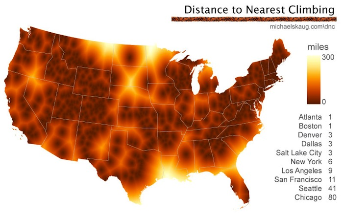

Inspired by the "distance to nearest road" project of the USGS, I wanted a map that would show the distance to nearest climbing in the conterminus US. First I needed the geographic coordinates of all climbing locations in the US. For this, I went to mountainproject.com which maintains a relatively complete list of climbing locations, from world class (Yosemite) to the barely known (I-70 East Bound Rest Area, Kansas?). After harvesting the geographic coordinates for each area and learning how to handle geographic data in python (Basemap), I came up with verion 1, shown above.
What can we learn from a map of the distance to nearest climbing?